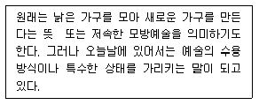
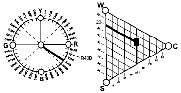

컬러리스트기사 (2004-08-08 기출문제)
1과목: 색채심리 마케팅
1. 다음 중 광고 매체 선정시 고려해야 할 점과 거리가 먼 것은?
- 매체의 특징
- 비용
- 경쟁
- 정보 분석
(정답률: 알수없음)

2. 다음 중 설문지 조사를 위한 조사자 교육에 관한 내용으로 잘못 설명된 것은?
- 조사의 취지와 표본 선정 방법에 대한 이해
- 조사자료의 분석방법
- 면접과정의 지침
- 참가자의 응답에 영향을 주지 않도록 하는 중립적이고 객관적인 태도 유지
(정답률: 알수없음)
3. 특정 지역의 하늘과 자연광, 습도, 흙과 돌 등에 의하여 자연스럽게 어울리고 선호되는 색채를 무엇이라 하는가?
- 지역색
- 선호색
- 대표색
- 자연색
(정답률: 알수없음)
4. 다음 중 소비자의 일반적 구매행동에서 영향을 미치는 요인이 아닌 것은?
- 문화적 특성
- 사회적 특성
- 심리적 특성
- 지식적 특성
(정답률: 알수없음)
5. 사용된 색에 따라 우울해 보이거나 따뜻해 보이거나 값 비싸 보이는 등의 심리적 효과는 무엇 때문인가?
- 색의 보편성
- 색의 조화
- 색의 연상력
- 색의 유사성
(정답률: 알수없음)
6. 다음 중 옳게 설명된 것은?
- 색의 한난감은 명도에 의해 결정된다.
- 색의 경연감은 명도에 의해 결정된다.
- 색의 강약감은 색상에 의해 결정된다.
- 색의 중량감은 채도에 의해 결정된다.
(정답률: 알수없음)
7. 조사방법에 대한 다음 기술 중 잘못된 것은?
- 개별 면접조사는 심층적인 정보를 수집하는데 용이하다.
- 전화조사는 즉각적인 응답반응을 알 수 있어 많이 선호한다.
- 우편조사는 최소한의 인원으로 높은 응답률을 기대 할 수 있다.
- 조사방법 중 표본의 대표성을 최대한 유지할 수 있는 것은 개별 면접조사이다.
(정답률: 알수없음)
8. 색채시장 조사의 기능이 잘 이루어진 결과가 아닌 것은?
- 판매촉진의 효과가 크다.
- 사고나 재해를 감소시켜 준다.
- 의사결정 오류의 폭을 좁혀 준다.
- 유통경제상의 절약효과를 제공한다.
(정답률: 알수없음)
9. 포장색채로 올바르지 않는 것은?
- 민트(mint)향 초콜릿 - 녹색과 은색의 포장
- 섬세하고 애로틱한 향수 - 난색계열, 흰색, 금색의 포장용기
- 밀크 초콜릿 - 흰색과 초콜릿색의 포장
- 바삭바삭 씹히는 맛의 초콜릿 - 밝은 핑크와 초콜릿 색의 포장
(정답률: 알수없음)
10. 치열한 제품 경쟁에서 살아남기 위해 각 제품들은 색채를 활용한 마케팅으로 전략적 차별화를 시도하고 있다. 다음은 색채가 주는 커뮤니케이션의 특성을 이해하고 이를 브랜드의 독특한 정체성으로 발전시킨 예이다. 관계가 적은 것은?
- 코카콜라
- 맥도날드
- 소니
- 코닥필름
(정답률: 알수없음)
11. 한국산업규격에서 사용하는 안전 색채에 속하지 않는 것은?
- 검정
- 흰색
- 남색
- 주황
(정답률: 알수없음)
12. 마케팅의 기본 요소인 4P가 아닌 것은?
- 소비자 행동
- 가격
- 판매촉진
- 제품
(정답률: 알수없음)
13. 21세기를 대표하는 것은 디지털이다. 디지털을 상징하는 대표색은?
- 노랑
- 빨강
- 청색
- 자주
(정답률: 알수없음)
14. 소비자 시장과 시장 세분화의 내용 중 틀린 것은?
- 시장 세분화는 상이한 제품을 필요로 하는 독특한 구매집단으로 시장을 분할하는 것이다.
- 다품종 소량생산체제의 최근의 시장은 대량 마케팅(Mass Marketing)을 지향한다.
- 시장 표적화는 여러 세분화된 시장 중에서 하나 또는 그 이상의 시장을 선정하는 과정이다.
- 시장의 위치 선정은 경쟁상품에 대한 위치와 상세한 마케팅 믹스를 개발하는 단계이다.
(정답률: 알수없음)
15. 색채 마케팅에 있어서 색채의 대표적인 역할을 설명한 것 중 틀린 것은?
- 색채는 주의를 집중시킨다.
- 상품을 인식시킨다.
- 상품의 이미지를 명료히 한다.
- 상품의 내용이 무엇인지를 알 수 없게 한다.
(정답률: 알수없음)
16. 인간과 밀착된 색의 중요성을 최초로 역설하였고 모든 색채 현상을 물리적, 심리적, 화학적인 세 부류로 나누었다. 물리적 색상환을 비판하고 수정을 가한 뒤 색채조화를 색상환의 위치로써 강조한 사람은?
- 뉴턴
- 요하네스 잇텐
- 괴테
- 만셀
(정답률: 알수없음)
17. 다음 중 광고의 효과가 아닌 것은?
- 수요의 자극
- 상품 또는 기업 촉진
- 인지도의 제고
- 생산성의 향상
(정답률: 알수없음)
18. 기업에서 마켓팅의 변화 과정으로 적합한 표현은?
- 대량 마켓팅 - 다양화 마켓팅 - 표적 마켓팅
- 표적 마켓팅 - 다양화 마켓팅 - 대량 마켓팅
- 다양화 마켓팅 - 표적 마켓팅 - 대량 마켓팅
- 대량 마켓팅 - 표적 마켓팅 - 다양화 마켓팅
(정답률: 알수없음)
19. 색채 선호에서 연령별 선호 경향으로 잘못된 것은?
- 아기들이 좋아하는 색은 빨강과 노랑이다.
- 색채 선호의 연령 차이는 인종, 국가를 초월하여 거의 비슷한 경향을 보인다.
- 연령이 낮을수록 원색 계열과 밝은 톤을 선호한다.
- 성인이 되면서 주로 장파장 색을 선호하게 된다.
(정답률: 알수없음)
20. 다음은 색채의 공감각적 특성을 설명한 내용이다. 사실과 다른 것은?
- 색채와 다른 감각간의 교류 현상이다.
- 자극받은 하나의 감각이 다른 감각에 적용되어 반응한다.
- 맛,모양,향,촉감 등 간에 동일한 메시지를 전달할 수 없는 언어로서의 한계가 색채의 공감각적 특성이다.
- 색채와 관련된 공감각 기관간의 상호작용을 활용하면 메시지와 의미를 보다 정확하고 강하게 전달할 수 있다.
(정답률: 알수없음)
2과목: 색채디자인
21. 현대적, 도시적인 감각과 양차대전 사이의 낙관적, 향락적 분위기가 잘 드러난 예술사조는?
- 역사주의
- 아르데코
- 바우하우스
- 포스트모더니즘
(정답률: 알수없음)
22. 시장 세분화(market segmentation)의 방법이 아닌 것은?
- 연령, 성별, 수입, 직업별로 나누는 인구학적 세분화
- 지역, 도시 크기, 인구밀도 등으로 나누는 지리적 세분화
- 문화, 종교, 사회 계층 등으로 나누는 사회 문화적 세분화
- 제품의 색상이나 외관 등에 의한 이미지 세분화
(정답률: 알수없음)
23. 디자인의 조건 중 '합목적성' 의 설명으로 틀린 것은?
- 합목적성이란 어떤 물건의 존재가 일정 목적에 부합되는 것을 말한다.
- 여기서 목적이란 실용적인 목적을 가리킨다.
- 실용성 또는 기능성을 말한다.
- 반드시 대량 분배를 목적으로 성립한다.
(정답률: 알수없음)
24. 다음 건물공간에 따른 색의 선택에 관한 설명 중 가장 적절치 않은 것은?
- 사무실은 30% 의 반사율을 가진 온회색(warm gray)이 적당하다.
- 상점에서 상품자체가 밝은 색채를 가진 경우 일반적으로 그 상품을 부드럽게 보이기 위해 같은 색채를 배경으로 한다.
- 병원에서 회복기 환자실은 복숭아색, 또는 부드러운 물색이 좋다.
- 학교색채에 있어 밝은 연녹색, 물색의 벽은 집중력을 준다.
(정답률: 알수없음)
25. 색조는 색의 삼속성 중 ( )와(과) ( )의 복합개념이다. 다음 중 ( )에 각각 들어갈 말을 알맞게 짝지은 것은 무엇인가?
- 색상 - 채도
- 채도 - 배색
- 명도 - 채도
- 배색 - 색상
(정답률: 알수없음)
26. 다음 중 형용사 반대어 쌍으로 척도를 만들어 색채디자인의 디자인 평가방법으로 현재에 있어서 가장 보편적으로 사용되는 조사방법은?
- 면접법
- SD 법
- 요인 분석법
- 수량화 분류법
(정답률: 알수없음)
27. 시각을 통해 느낄 수 있는 물체의 표면상 특징은?
- 매스(mass)
- 텍스쳐
- 색조
- 점증
(정답률: 알수없음)
28. 모던디자인사에서 형태와 기능의 관계에 대해 '형태는 기능에 따른다' 라고 말한 사람은?
- 월터 그로피우스
- 루이스 설리반
- 필립 존슨
- 프랑크 라이트
(정답률: 알수없음)
29. 기존 제품의 재료나 기능 또는 형태를 개량하고 개선하는 것을 무엇이라 하는가?
- 리디자인(re-design)
- 리스타일(re-style)
- 이미지 디자인(image design)
- 혁신 디자인(advanced design)
(정답률: 알수없음)
30. 1900년을 전후 파리를 중심으로 일어난 신예술운동은?
- 아트 앤 크래프트
- 아르누보
- 유겐트 스틸
- 세제션
(정답률: 알수없음)
31. '사람들이 살아가고 시간과 돈을 쓰는 양태'를 무엇이라 하는가?
- 라이프 스타일(life style)
- 생활 주기(life cycle)
- 이미지 맵(image map)
- 마케팅(marketing)
(정답률: 알수없음)
32. 인간생활의 질적 수준을 향상시키기 위하여 형식미와 기능 그 자체와 유기적으로 결합된 형태, 색채, 아름다움을 나타낸 것은?
- 독창성
- 심미성
- 경제성
- 문화성
(정답률: 알수없음)
33. 색채계획은 규모와 장소에 따라 내용이 달라지기도 한다. 색채계획의 일반적인 고려조건에 해당되지 않는 것은?
- 정보 제공
- 감성 자극
- 표준화 강조
- 개성 표현
(정답률: 알수없음)
34. 20세기 패션색채에 관한 기술로 가장 관계가 먼 것은?
- 1900년대에는 아르누보의 연한 파스텔 색조가 유행 하였다.
- 1920년대에는 아르데코 경향과 함께 흰색, 청색 등 차분한 색조가 사용되었다.
- 1940년대 초반에는 군복의 영향으로 검정, 카키, 올리브 등이 사용되었다.
- 1960년대에는 팝아트의 명도와 채도가 높은 현란한 색채가 사용되었다.
(정답률: 알수없음)
35. 한 가지 계통의 색에서 채도가 가장 높은 것은?
- 혼색
- 단색
- 순색
- 명색
(정답률: 알수없음)
36. 시각디자인에 관한 기술로 가장 타당하지 않은 것은?
- 시각 디자인의 역할은 다양한 계층의 사람들에게 짧은 시간에 감성적 만족을 주는 것이다.
- 시각 커뮤니케이션에 있어 색채는 매우 중요한 역할을 하는 디자인 요소이다.
- 시각 디자인은 일차적으로 시각적 흥미를 불러일으킬 필요가 있다.
- 시각 디자인의 매체는 인쇄매체에서 점차 영상매체로 확대되고 있다.
(정답률: 알수없음)
37. 국제 유행색 협회(International Commission for Fashionand Textile Colors)에 대한 설명이 잘못된 것은?
- 1963년에 설립되었다.
- 3년 후의 색채 방향을 분석하고 제안한다.
- 봄/여름, 가을/겨울의 두 분기로 유행색을 예측 제안한다.
- 매년 1월과 7월말에 협의회를 개최한다.
(정답률: 알수없음)
38. 다음이 설명하는 디자인 사조는 무엇인가?

- 다다이즘
- 아르누보
- 포스트모더니즘
- 키치
(정답률: 알수없음)
39. 한 의류 회사에서 2002년 월드컵 기간 동안 빨간색 티셔츠가 유행할 것이라고 예측하여 커다란 업무실적을 올렸다. 이처럼 어떤 제품이나 성향이 단기간에 커다란 반응을 일으키고 사라지는 유형을 무엇이라 하는가?
- 패션(fashion)
- 트랜드(trend)
- 패드(fad)
- 플로프(flop)
(정답률: 알수없음)
40. 다음 중 가장 자연친화적인 재료는?
- 종이
- 나무
- 금속
- 플라스틱
(정답률: 알수없음)
3과목: 색채관리
41. 다음은 한국산업규격(KS)의 용어에 대한 설명이다. 틀린 것은?
- 휘도순응: 시각계가 시야의 휘도에 순응하는 과정 또는 순응한 상태
- 명순응: 3 cd·m-2정도 이상인 휘도의 자극에 대한 휘도순응
- 명소시: 명순응 상태에서 시각계가 시야의 색에 순응하는 과정 또는 순응된 상태
- 암순응: 0.03 cd·m-2정도 이하인 휘도의 자극에 대한 휘도순응
(정답률: 알수없음)
42. 조명광의 혼색, 텔레비전이나 컴퓨터 모니터의 혼색은 어떤 혼색인 경우인가?
- 감법혼색
- 병치혼색
- 반사혼색
- 가법혼색
(정답률: 알수없음)
43. 색채 오차의 계산법 중 베버와 페히너의 법칙에 대한 설명으로 틀린 것은?
- 자극이 등차적으로 변화하면 감각은 등비 급수적으로 변화한다.
- 자극 강도와 감각 강도의 상관 관계를 나타낸다.
- 베버-페히너의 법칙은 베버의 법칙으로부터 도출된 것이다.
- 감각의 강도는 자극 강도의 대수에 비례한다.
(정답률: 알수없음)
44. CCM(Computer Color Matching)에서의 혼색방법 중 가법 혼색의 특징은?
- 가법 혼색은 양복과 같은 색실의 직물이나 망점 인쇄의 혼색을 말한다.
- 가법 혼색에서 주색은 특정한 파장을 효율적으로 깎아내는 특성을 가진 색료가 된다.
- 가법 혼색의 특징은 각 주색의 파장영역이 좁으면 좁을수록 색역이 오히려 확장된다.
- 가법 혼색에서의 색료는 원단이나 바탕소재의 반사율이나 투과율을 점점 감소시킨다.
(정답률: 알수없음)
45. 물체의 색을 측정하는 방법 중 0/d 에 관한 설명이다. 맞는 것은?
- 수직으로 입사시키고 분산광을 관측
- 분산광을 입사시키고 수직방향에서 관측
- 물체면에 수직 입사시키고 45° 방향에서 관측
- 물체면에 수직 입사시키고 수직방향에서 관측
(정답률: 알수없음)
46. 도료에 사용되는 무기안료가 아닌 것은?
- Titanium dioxide
- Phthalocyanine Blue
- Iron Oxide Yellow
- Iron Oxide Red
(정답률: 알수없음)
47. 색채 입력 디바이스인 디지털 카메라, 비디오 카메라, 스캐너 등의 가장 기본이 되는 반도체 소자의 일종인 전하결합소자는?
- CGM(color gamut mapping)
- CT(contone)
- CCD(Charge Coupled Device)
- AD변환기(analogue to digital converter)
(정답률: 알수없음)
48. 색채를 관찰하기에 적합한 조명조건으로써 반드시 필요한 것이 아닌 것은?
- 광원의 색온도가 높아야 한다.
- 광원의 연색지수가 높아야 한다.
- 조도가 충분해야 한다.
- 간접조명이어야 한다.
(정답률: 알수없음)
49. 발색층에서 광선은 확산하여 투과하고 흡수되면서 진행하게 되는 것으로, 일정한 두께를 가진 발색층에서 감법 혼색을 하는 경우에 성립하는 CCM의 기본 원리는?
- 데이비스-깁슨(Davis-Gibson) 이론
- 파버 비렌(Faber Birren) 이론
- 아더 포프(Arthur Pope) 이론
- 쿠벨카 문크(Kubelka Munk) 이론
(정답률: 알수없음)
50. 픽셀로 이루어진 디지털화 된 그림의 유형을 무엇이라고 하는가?
- 비트맵(bitmap)
- 바이트(byte)
- 벡터 그래픽(vector graphic)
- 엘리멘트(element)
(정답률: 알수없음)
51. 색료에 대한 설명으로 틀린 것은?
- 염료와 안료로 구분된다.
- 염료는 일반적으로 물에 용해되는 색료이다.
- 유기안료는 무기안료보다 착색력,내광성,내열성이 우수하다.
- 잉크에 색을 주기 위한 재료이다.
(정답률: 알수없음)
52. 다음 중 CIE L*a*b* 색좌표계에서 가장 밝은 노란색에 해당되는 표기 사항은?
- L*= 0, a*= 0, b*= 0
- L*= +80, a*= 0, b*= -40
- L*= +80, a*= +40, b*= 0
- L*= +80, a*= 0, b*= +40
(정답률: 알수없음)
53. 디지털 색체계에서 컬러 세팅(color setting)에 대한 설명이다. 맞는 것은?
- 감마(gamma)는 컴퓨터 모니터 또는 이미지의 각 부분에 해당하는 어둡기와 색상, 채도를 말한다.
- UCR은 Under Color Removal로서 주로 흑백톤의 조절에 사용된다.
- GCR은 Gray Component Removal로서 원색잉크의 농도에 따라 흑색 잉크의 농도가 자동적으로 조정된다.
- White Point는 모니터나 소프트웨어를 보면 흰색을 제외한 컬러를 기준으로 설정하도록 하는 것이다.
(정답률: 알수없음)
54. 다음의 육안검색 조건 중 옳지 않은 것은?
- 육안검색의 측정각은 관찰자와 대상물의 각을 45°로 한다.
- 먼셀 명도 3 이하의 정밀 검사를 위해서는 반드시 3,000 lux이상 조건이어야 한다.
- 유리창, 커튼 등의 투과 광선을 피해야 한다.
- 해가 지기 30분 전에는 인공광원을 이용한다.
(정답률: 알수없음)
55. 다음 색채재료 중 CIE-C 표준광과 D65 표준광에서의 색좌표가 가장 크게 차이가 날 만한 색채는 어느 색료를 사용한 색채인가?
- 수용성 색료
- 간섭성 색료
- 열변성 색료
- 형광성 색료
(정답률: 알수없음)
56. 디지털 색채와 관련된 설명으로 맞는 것은?
- 1비트는 흑색의 1가지 색채 level을 제공한다.
- 인치당 샘플 수(spi), 인치당 선수(lpi), 인치당 점의 수(dpi)는 모두 해상도를 나타내기 위한 개념들이다.
- 같은 해상도일 경우 dpi와 lpi는 같은 수치이다.
- 2비트 데이터는 흑과 백의 2가지 색채 level을 제공한다.
(정답률: 알수없음)
57. 해상도(resolution)에 관한 설명이다. 맞는 것은?
- 화면에 디스플레이 된 색채 영상의 선명도는 해상도와 모니터 크기에 좌우되지 않는다.
- ppi는 1인치 내에 들어갈 수 있는 픽셀의 수를 말한다.
- 픽셀의 색상은 빨강, 시안, 노랑의 3가지 색상스펙트럼 요소들로 만들어진다.
- 최고 해상도 1,280x1,024를 가지고 있는 디스플레이 시스템은 그 보다 낮은 해상도를 지원하지 못한다.
(정답률: 알수없음)
58. CCM(Computer Color Matching)을 도입하여 나타나는 효과 중 옳지 않은 것은?
- 다양한 색채에 대한 신속한 처방
- 제품의 품질을 균일하게 관리
- 메타메리즘 예측
- 모든 색상의 아이소머리즘 동일화
(정답률: 알수없음)
59. 색료 선택시 고려되어야 할 조건 중 틀린 것은?
- 특정 광원에서만의 색채 현시(color appearance)에 대한 고려
- 착색비용
- 작업공정의 가능성
- 착색의 견뢰성
(정답률: 알수없음)
60. 육안 검사의 표기방법 중 사용광원의 성능에 대한 내용이 아닌 것은?
- 평균연색 평가수
- 가시조건 등색지수
- 측색기의 최대 연색 평가수
- 형광조건 등색지수
(정답률: 알수없음)
4과목: 색채지각론
61. 인간 눈의 구조에서 시신경 섬유가 나가는 부분으로 광수 용기가 없어 대상을 볼 수 없는 곳은?
- 맹점
- 중심와
- 공막
- 맥락막
(정답률: 알수없음)
62. 빛의 파장이 길면 굴절률이 작고, 파장이 짧으면 굴절률이 크기 때문에 일어나는 현상은?
- 연색성
- 연속 스펙트럼
- 산란
- 회절
(정답률: 알수없음)
63. 환경색채를 계획하면서 좀 더 부드러운 느낌이 되도록 색을 조정하려고 한다. 가장 적합한 것은?
- 따뜻한 색을 사용한다.
- 채도를 낮춘다.
- 진출색을 사용한다.
- 명도를 낮춘다.
(정답률: 알수없음)
64. 푸르킨예 현상에 대한 설명 중 틀린 것은?
- 낮에는 빨간 사과가 밤이 되면 검게 보이며, 낮에는 파란 공이 밤이 되면 밝은 회색으로 보이는 현상
- 조명이 점차로 어두워지면 파장이 짧은 색이 먼저 사라지고 파장이 긴 색이 나중에 사라지는 현상
- 새벽이나 초저녁의 물체들이 대부분 푸르스름하게 보이는 현상
- 초저녁에 가까워질수록 초목의 잎이 선명하게 보이는 현상
(정답률: 알수없음)
65. 다음 중 무채색과 무채색을 구분하는 기준이 되는 것은?
- 명도
- 색상
- 채도
- 순도
(정답률: 알수없음)
66. 연극무대에서 주인공을 향해 녹색과 빨간색 조명을 각각 다른 방향에서 비추었다. 주인공에게는 어떤 색의 조명으로 비추이겠는가?
- Cyan
- Yellow
- Magenta
- Gray
(정답률: 알수없음)
67. 다음 중 눈에 대한 설명 중 틀린 것은?
- 외부에서 들어오는 빛의 양을 조절하는 구실을 하는 것은 홍채이다.
- 수정체는 빛을 굴절시킴으로써 망막에 선명한 상이 맺도록 한다.
- 망막의 중심부에는 간상체만 있다.
- 빛에 대한 감각은 광수용기 세포의 반응에서 시작된다.
(정답률: 알수없음)
68. 색의 수축과 팽창에 대한 설명 중 틀린 것은?
- 따뜻한 색은 팽창색이 된다.
- 명도가 높은 색은 팽창색이 된다.
- 진출색은 수축색이 된다.
- 차가운 색은 수축색이 된다.
(정답률: 알수없음)
69. 색의 삼원색에 대한 설명으로 맞는 것은?
- 색의 종류는 3가지 뿐이다.
- 원색은 다른 색의 조합으로 만들어낼 수 있다.
- 삼원색이 존재한다는 것을 처음 실험으로 확인한 사람은 헬름홀쯔이다.
- 원색이 3개인 것은 원뿔세포(추상체)의 종류가 3개이기 때문이다.
(정답률: 알수없음)
70. 보색에 관한 설명으로 틀린 것은?
- 혼합하여 무채색이 되는 두색의 관계를 의미한다.
- 보색이 되는 두 색광을 혼합하면 흰색이 된다.
- 보색이 되는 두 물감을 혼합하면 검정에 가까운 색이 된다.
- 색상환에서 비교적 거리가 먼 색을 의미한다.
(정답률: 알수없음)
71. 보색대비에 관한 설명 중 틀린 것은?
- 색상대비 중에서 서로 보색이 되는 색들끼리 나타나는 대비효과를 보색대비라고 한다.
- 두 색은 서로 영향을 받아 본래의 색보다 채도가 높아지고 선명해진다.
- 유채색과 무채색이 인접될 때 무채색은 유채색의 보색기미가 있는 듯이 보인다.
- 서로 보색대비가 되는 색끼리 어울리면 채도가 낮아져 탁하게 보인다.
(정답률: 알수없음)
72. 하양의 종이 위에 빨강의 원을 놓고 얼마동안 보다가 그 바탕의 하얀종이를 빨간종이로 바꾸어 놓으면 검정의 원이 느껴진다. 이것은 어떤 대비현상인가?
- 채도대비
- 동시대비
- 연변대비
- 계시대비
(정답률: 알수없음)
73. 일반적으로 의사들이 수술실에서는 청록색의 가운을 입는다. 이는 어떤 현상을 막기 위한 것인가?
- 음의 잔상
- 양의 잔상
- 동화 현상
- 푸르킨예 현상
(정답률: 알수없음)
74. 색채의 감정효과에 맞도록 색을 가장 올바르게 사용한 것은?
- 대기실이나 휴게실에 검은 회색을 주로 사용하였다.
- 유동성이 강한 호텔의 로비에 파란색을 주로 사용하였다.
- 여름철 실내 배색은 주황색을 주로 사용하였다.
- 방의 한 벽면이 후퇴해 보이게 하려고 한 벽면에 나머지 벽면보다 어두운 색을 사용하였다.
(정답률: 알수없음)
75. 색을 직접 섞지 않고 색점을 배열함으로써 혼색된 것처럼 중간색이 보이는 효과는?
- 비렌 효과
- 헬름홀쯔 효과
- 푸르킨예 효과
- 베졸드 효과
(정답률: 알수없음)
76. 정의 잔상(양성적 잔상)에 대한 설명으로 맞는 것은?
- 색자극에 대한 잔상으로 대체로 반대색으로 남는다.
- 어두운 곳에서 빨간 성냥불을 돌리면 길고 선명한 빨간 원이 그려지는 현상이다.
- 원자극과 같은 정도의 밝기와 반대색의 기미를 지속하는 현상이다.
- 원자극이 선명한 파랑이면 밝은 주황색의 잔상이 보인다.
(정답률: 알수없음)
77. 노란 색종이를 조그맣게 잘라 여러 가지 배경색 위에 놓았다. 다음 어떤 배경색에서 가장 선명한 노란색으로 보이는가?
- 주황색
- 연두색
- 파란색
- 빨강색
(정답률: 알수없음)
78. 다음 가법혼색에서 혼색한 결과가 틀린 것은?
- blue + green = cyan
- green + red = yellow
- cyan + red = magenta
- blue + green + red = white
(정답률: 알수없음)
79. 교통표지나 광고물 등에 사용될 색을 선정할 때 우선적으로 고려해야 할 점은?
- 색의 원근감
- 색의 수축성
- 색의 명시성
- 색의 온도감
(정답률: 알수없음)
80. 다음 빛과 색에 대한 설명 중 맞는 것은?
- 색채의 3속성은 Hue, Value, Chroma 이다.
- 색광을 표시하는 표색계를 현색계라 하며 CIE 표준표색계가 있다.
- 빛의 3원색은 빨강, 파랑, 노랑이다.
- 스펙트럼 분광에서 장파장 쪽은 청색이다.
(정답률: 알수없음)
5과목: 색채체계론
81. 먼셀 표색계에 관한 설명으로 맞는 것은?
- 색의 삼속성에 따른 지각적인 등보도성을 가진 체계적인 배열
- 심리· 물리적인 빛의 혼색실험에 기초를 둔 표색계
- 표준 3원색인 적, 녹, 청의 조합에 의한 가법혼색의 원리가 적용된다.
- 혼합하는 색량의 비율에 의하여 만들어진 체계
(정답률: 알수없음)
82. '빛은 전자기파이다' 라 주장하였으며, 회전 혼색의 원리를 설명한 사람은?
- 괴테
- 맥스웰
- 호이겐스
- 아리스토텔레스
(정답률: 알수없음)
83. 오스트발트 표색계는 'W(이상적인 백색), B(이상적인 흑색), C(이상적인 순색)를 꼭지점으로 하는 등색상 삼각형 이 대칭형태로 구성되어 조화는 질서와 같다' 라는 기본원리를 보여주고 있다. 등흑계열에 따라 조화로운 색을 선택하는 방법은?
- 등색상 삼각형의 C, B와 평행선상에 있는 색
- 등색상 삼각형의 C, W와 평행선상에 있는 색
- 등색상 삼각형의 W, B와 평행선상에 있는 색
- 등색상 삼각형의 W, B를 축으로 회전시켜 같은 위치에 있는 색
(정답률: 알수없음)
84. 문·스펜서의 색채조화원리에 대한 설명으로 틀린 것은?
- 균형있게 선택된 무채색의 배색은 아름답다.
- 작은 면적의 약한 색과 큰 면적의 강한 색은 조화된다.
- M = O(질서성의 요소)/C(복잡성의 요소) = (0.5 이상 이면 좋은 배색)
- 색상, 채도는 일정하게, 명도만 변화시키는 경우 많은 색상사용시 보다 미도(M)가 높다.
(정답률: 알수없음)
85. 색명에 대한 설명 중 맞는 것은?
- 색명이란 표색의 일종이다.
- 색명은 최근에 학술적으로 다시 정리한 것이다.
- 색명은 국가나 인종에 관계없이 같다.
- 색명은 표색계보다 정확하고 이성적이다.
(정답률: 알수없음)
86. 다음 중 NCS 색삼각형과 색상환에서 표시하고 있는 색에 대한 설명으로 맞는 것은?

- Blue는 40%의 비율이다.
- 유채색도는 20%의 비율이다.
- 뉘앙스는 5020으로 표기한다.
- 검정색도는 50%의 비율이다.
(정답률: 알수없음)
87. 현색계(color appearance system)인 것은?
- CIE 표준표색계
- XYZ 표색계
- CIELAB 표색계
- NCS 표색계
(정답률: 알수없음)
88. 관용색명과 그 유래가 맞는 것은?
- 광물 - 세피아
- 식물 - 치자
- 인명 - 진사
- 동물 - 마젠타
(정답률: 알수없음)
89. 다음에 제시된 오스트발트 표색계의 기호에 대한 설명으로 맞는 것은? 예) 2eg
- 백색량 = 100-(e+g)
- 순색량 = 2+e+g
- 색상은 2Y, 백색량은 e, 흑색량은 g이다.
- 색상은 2Y, 흑색량은 e, 백색량은 g이다.
(정답률: 알수없음)
90. ISCC-NBS 색명법에 관한 설명으로 맞는 것은?
- 무채색 단계는 N1에서 N9.5까지 세밀하게 나뉘어져 있다.
- 무채색 앞에 채도에 관한 수식어를 사용하여 무채색에 가까운 유채색을 나타낸다.
- 색상, 명도, 채도를 표시하는 수식어를 특별히 정하여 표시한 색명법이다.
- moderate, pale, strong, vivid는 색상을 의미하는 수식어이다.
(정답률: 알수없음)
91. 먼셀의 색채조화론이 아닌 것은?
- 등백계열, 또는 등흑계열의 색과 그 선상의 무채색과는 조화된다.
- 임의의 색에서 그 보색쪽으로 옮겨감에 따라, 그 사이의 단계들은 무채 회색에 근접했다가 멀어지며 정연한 단계로 이동하는 타원형의 경로를 따른다.
- N 5 에 근거한 조화이론이다.
- 명도, 채도가 모두 다른 반대색끼리는 배색할 경우 회색척도에 준하여 질서있는 간격으로 배색하면 조화롭다.
(정답률: 알수없음)
92. 3자극치 XYZ 표색계와 관계가 있는 것은?
- 먼셀 표색계
- 오스트발트 표색계
- NCS 표색계
- CIE 표색계
(정답률: 알수없음)
93. CIE 표색계의 설명이다. 틀린 것은?
- 표준광원에서 표준관찰자에 의해 관찰되는 색을 정량화시켜 수치로 만드는 것이다.
- 1931년 국제조명회(CIE)는 X Y Z 표색계와 Yxy표색계를 발표하였다.
- Y값은 황색의 자극치로 명도치를 나타내고, X는 청색, Z는 적색의 자극치에 일치한다.
- CIE L*a*b* 표색계는 색오차와 근소한 색차이를 표현하기 위해 변환된 색공간이다.
(정답률: 알수없음)
94. 음양오행에 의한 색과 방위의 관계 중 틀린 것은?
- 백 - 서방
- 적 - 북방
- 황 - 중앙
- 청 - 동방
(정답률: 알수없음)
95. 다음 중 먼셀 색체계의 이해로 옳게 설명한 것은?
- 먼셀은 색채의 사용과 배색에 있어 균형이론을 중시하였는데 무채색 단계 N2와 N8로 균형을 맞춘다.
- 각 색상의 180도 반대 방향의 색상은 서로 보조관계에 있다.
- 먼셀의 채도는 시각적으로 고른 색채단계를 이루므로 5R, 5Y의 채도는 14, 5RP의 채도는 12, 5P의 채도는 10, 5BG의 채도는 8단계까지 구성되었으나 도료발달로 그 수치가 유동성을 갖는다.
- 먼셀 채도의 표기법은 1/3/5/7/9/11/13 등을 사용하며, 많이 쓰이는 12와 14를 추가하여 사용한다.
(정답률: 알수없음)
96. 아래의 NCS 색상기호 중 빨간색성이 가장 높은 색상의 기호는 어떤 것인가?
- Y10R
- R10B
- R50B
- Y80R
(정답률: 알수없음)
97. 오스트발트 색체계와 관련 깊은 이론은?
- 문-스펜서 조화론
- 뉴톤의 광학
- 헤링의 반대색설
- 영-헬름홀츠 이론
(정답률: 알수없음)
98. 패션 색채계획시 명도와 채도가 같은 색으로 색상의 변화만을 주어 배색하는 기법은?
- 톤온톤
- 톤인톤
- 토널
- 까마이외
(정답률: 알수없음)
99. 오스트발트의 색채조화에서 등색상 3각형의 COLOR와 BLACK을 잇는 평행선상에 있는 색은?
- 등흑계열조화
- 등백계열조화
- 등순계열조화
- 유채색의 조화
(정답률: 알수없음)
100. 다음 중 혼색계와 관련이 없는 것은?
- XYZ 표색계
- RGB 표색계
- Munsell 표색계
- 맥스웰 표색계
(정답률: 알수없음)